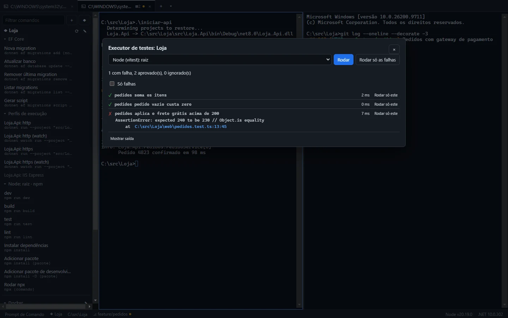
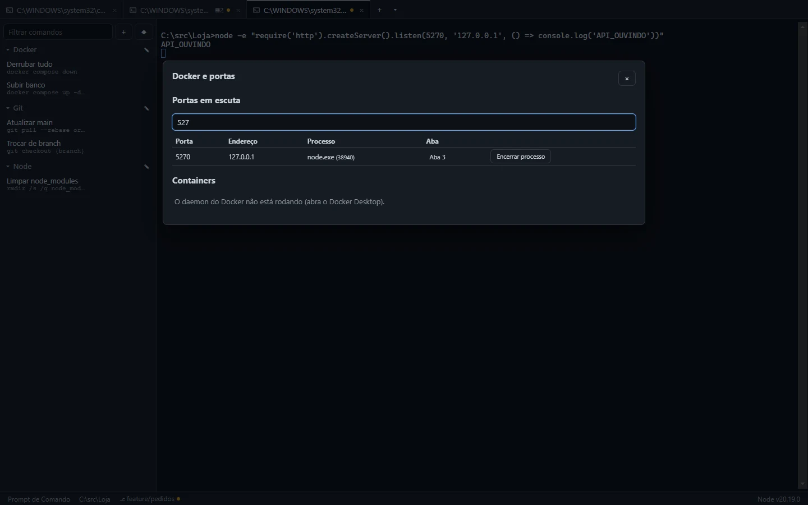
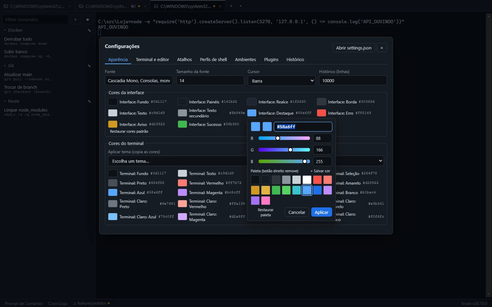

Manual do Gunslinger
O Gunslinger é um terminal para Windows 10 e 11 pensado para quem trabalha com .NET e Node.js. Este manual cobre a versão 1.0.0.

Instalação
Baixe o Gunslinger-Setup.exe e execute. A instalação é por usuário (não pede administrador), cria o atalho no Menu Iniciar e mantém suas configurações ao desinstalar.
Se o Windows SmartScreen avisar na primeira execução, clique em Mais informações → Executar assim mesmo. O instalador ainda não tem assinatura digital.
Atalhos
| Ação | Atalho padrão |
|---|---|
| Nova aba (perfil padrão) | Ctrl+T |
| Fechar painel ou aba | Ctrl+W |
| Próxima / anterior aba | Ctrl+Tab / Ctrl+Shift+Tab |
| Paleta de comandos | Ctrl+P |
| Buscar na saída | Ctrl+F |
| Painel lateral | Ctrl+B |
| Copiar / colar | Ctrl+Shift+C / Ctrl+Shift+V (Ctrl+C com seleção também copia) |
| Configurações | Ctrl+, |
| Dividir à direita / abaixo | Alt+Shift+= / Alt+Shift+- |
| Próximo / anterior painel | Alt+→ / Alt+← |
Todos podem ser trocados em Configurações → Atalhos.
Bash e WSL: Ctrl+W, Ctrl+T, Ctrl+P, Ctrl+F e Ctrl+B também são atalhos do readline. Para devolvê-los ao shell, troque-os nas configurações (por exemplo, Ctrl+Shift+W). A tela avisa quando uma combinação conflita.
Abas e painéis
- O + abre uma aba com o perfil padrão; o menu ▾ ao lado abre qualquer perfil detectado (PowerShell, PowerShell 7, CMD, Git Bash, distribuições do WSL) ou customizado.
- Divida a aba em painéis com os atalhos acima; arraste as divisórias para redimensionar. Ctrl+W fecha o painel ativo, e a aba fecha junto com o último.
- Perfis customizados, cores e ícones ficam em Configurações → Perfis de shell.
- Ao fechar o app com comandos rodando, ele pergunta antes e encerra a árvore de processos de cada aba (nada fica órfão).
Comandos salvos
No painel lateral (Ctrl+B), o + cria um comando com nome, categoria, descrição, shell de destino e pasta. Use variáveis entre chaves:
git checkout {branch}
dotnet ef database update {migration} --connection "{conexao}"Ao executar, o app pede os valores (com lista de opções e valor padrão, se definidos). ▶ executa, ⤓ só insere no terminal sem Enter. Categorias podem ser renomeadas pelo ✎.
Paleta de comandos
Ctrl+P busca em comandos salvos, comandos de projeto, scripts, workspaces, perfis de ambiente e ações do app. A busca ignora acentos e aceita letras fora de ordem (“migra” encontra “Nova migration”). Enter executa; Shift+Enter insere sem executar.

Projetos .NET e Node
Em Projetos (◆ no painel lateral), adicione a pasta do repositório. O app analisa:
- .NET: soluções e
.csproj, sugerindo o projeto das migrations e o de startup. O grupo EF Core traz nova migration, atualizar banco, remover a última, listar e gerar script, com aviso se odotnet-efnão estiver instalado. - launchSettings.json: cada perfil do tipo Project vira
dotnet runedotnet watch runcom--launch-profile; perfis de IIS Express aparecem desativados com o motivo. - Node: cada
package.json(inclusive em subpastas de monorepos) com seus scripts e o gerenciador detectado pelo lockfile (npm, pnpm ou yarn), além de instalar dependências, adicionar pacote e npx.
Abrir um projeto abre uma aba na raiz dele, com o perfil padrão do projeto. Os comandos rodam sempre na pasta certa.
Executor de testes
Com um projeto aberto, Executor de testes (paleta) lista os projetos de teste .NET (xUnit, NUnit, MSTest) e os pacotes Node com Vitest ou Jest. Os testes rodam fora do terminal e o painel mostra aprovados, falhas e ignorados, com mensagem e stack trace clicável, Rodar só este, Rodar só as falhas, cancelamento e a saída bruta.

pedidos.test.ts:13.Docker e portas
Docker e portas (paleta) lista as portas TCP em escuta com o processo dono e, quando o processo nasceu de uma aba do Gunslinger, a aba (clique para ir até ela). Encerrar processo pede confirmação.
Os containers vêm do CLI do Docker: iniciar, parar, reiniciar e remover; Logs e Shell abrem uma aba nova com docker logs -f ou docker exec -it … sh. Sem Docker ou com o daemon parado, o painel mostra o motivo. A lista se atualiza a cada 5 segundos.

node.exe da aba 3.Perfis de ambiente
Em Configurações → Ambientes, crie conjuntos de variáveis (Dev, Homologação, Produção, com ASPNETCORE_ENVIRONMENT e connection strings). Na paleta:
- Nova aba com ambiente: as variáveis entram no processo do shell e não aparecem no histórico.
- Aplicar ambiente: digita
set,$env:ouexportna aba ativa, com pré-visualização. Ambientes sensíveis pedem confirmação explícita.
A aba mostra o ambiente com a cor dele. Os valores ficam em texto puro no settings.json: evite guardar segredos de produção ali.
Workspaces
Monte as abas e painéis do dia e use Salvar abas como workspace. Abrir workspace recria tudo, com perfis, pastas e projetos. Em Gerenciar workspaces, defina um comando inicial por painel (como dotnet watch run ou npm run dev); ao abrir, o app lista os comandos e só executa depois da sua confirmação.
Abas como administrador
No menu ▾, o botão 🛡 Admin ao lado de PowerShell, CMD e Git Bash abre o shell elevado (também na paleta). A confirmação é sempre o UAC do Windows.
- Com o sudo do Windows em modo inline (Windows 11 24H2+) ou o gsudo, a aba elevada fica dentro do app, marcada com 🛡.
- Sem nenhum dos dois, o shell elevado abre numa janela separada.
Barra de status
Mostra o shell, o projeto, a pasta atual, a branch do Git (com ● quando há alterações) e as versões do Node e do .NET da pasta atual (respeitando o global.json e os shims do Volta). Com o fnm por sessão, o PowerShell e o Bash informam a versão do Node da aba. Quando um instalador ou o setx muda as variáveis de ambiente, o app recarrega o ambiente sozinho; para mudanças que não avisam o Windows, use Recarregar ambiente na paleta. Abas abertas mostram “ambiente desatualizado”, com a opção de reiniciar.
Sessão, histórico de comandos e processos
- Última sessão: ao abrir, o app reabre as abas e painéis que estavam abertos (sem executar nenhum comando).
- Histórico de comandos: Ctrl+Shift+H busca nos comandos digitados em todas as abas. Enter escreve o comando no terminal; Ctrl+Enter executa. Comandos começados por espaço não são guardados.
- Processos que saem da aba: ao fechar uma aba, os processos que ela iniciou e continuam rodando fora dela (
start, servidores em segundo plano) são listados com Encerrar ou Manter rodando.
Tudo isso se ajusta em Configurações → Terminal e editor. As configurações também abrem pela engrenagem à direita das abas.
Atualizações
O app procura versões novas ao abrir e a cada 4 horas, baixa em segundo plano e mostra Versão X pronta · Reiniciar na barra de status. A instalação acontece ao reiniciar ou na próxima vez que você fechar o app. Em Configurações → Sobre e atualizações ficam a versão, Procurar atualizações e a opção de desligar a verificação automática.
Destaque de logs e links
Erros (vermelho), avisos (amarelo) e sucesso (verde) são destacados na saída: MSBuild, níveis fail:/warn: do ASP.NET Core, npm WARN e resultados de testes. O destaque é só visual: copiar e buscar veem o texto original. Ligue e desligue com Alternar destaque de logs, ou crie regras no settings.json:
"logHighlight": {
"enabled": true,
"rules": [{ "pattern": "PEDIDO-\\d+", "ignoreCase": false, "foreground": "#58a6ff" }]
}Ctrl+clique abre URLs no navegador e caminhos como Program.cs(42,13) ou src/App.tsx:10:5 no editor (VS Code por padrão, configurável).
Cores
Em Configurações → Aparência ficam as cores da interface (fundo, painéis, borda, texto, destaque, erro, aviso e sucesso) e as do terminal (fundo, texto, cursor, seleção e as 16 cores ANSI). Clicar numa cor abre o seletor:
- campo hexadecimal, que aceita
#rrggbb,#rgb,rgb(18, 52, 86)ou18, 52, 86; - controles R, G e B de 0 a 255, com a cor atual ao lado da nova;
- a paleta: + Salvar cor guarda, o botão direito remove, um clique duplo aplica.
A cor só é gravada em Aplicar (ou Enter); Esc descarta. Restaurar cores padrão volta a interface ao original.

Plugins
Plugins são só dados: uma pasta em %APPDATA%\Gunslinger\plugins\ com um plugin.json. Nenhum código de plugin é executado. Eles podem trazer comandos, workspaces, perfis de shell, temas e regras de destaque, que aparecem marcados com o nome do plugin e sem editar ou excluir.
{
"id": "kit-loja",
"name": "Kit Loja",
"version": "1.0.0",
"contributes": {
"commands": [{ "id": "db", "name": "Subir banco", "command": "docker compose up -d db" }],
"workspaces": [{ "id": "full", "name": "Loja", "tabs": [{ "type": "pane", "pane": { "command": "npm run dev" } }] }]
}
}Em Configurações → Plugins ficam a lista, os erros de validação, ativar/desativar, abrir a pasta e recarregar.
Histórico de dados
A cada mudança em configurações, comandos, projetos ou workspaces (pela interface ou editando os arquivos), o app guarda uma versão local. Em Configurações → Histórico você cria pontos de restauração com nome, restaura qualquer versão (o estado atual fica salvo como “Antes de restaurar”) e exclui versões. Ficam as 50 automáticas mais recentes.
Configuração
Os arquivos ficam em %APPDATA%\Gunslinger:
| Arquivo | Conteúdo |
|---|---|
settings.json | aparência, atalhos, editor, perfil padrão, notificações, ambientes e perfis de shell (aceita comentários) |
commands.json | comandos salvos |
projects.json | projetos |
workspaces.json | workspaces |
history/, plugins/ | histórico de dados e plugins |
Mudanças feitas direto nos arquivos são aplicadas sem reiniciar. Se um arquivo ficar inválido, o app abre com os valores padrão, mostra a linha do erro e não grava nada nele até você corrigir (a versão anterior fica em <arquivo>.bak). Importar/Exportar (paleta) troca comandos, perfis e projetos com outras pessoas, com prévia e resolução de conflitos.
Limitações conhecidas
- fnm no CMD: o CMD não informa a versão do Node da sessão; a barra mostra a do ambiente do app.
- WSL: em pastas internas da distribuição, a barra mostra o Git, mas não as versões de Node e .NET.
- Git Bash e emoji: o console do MSYS não repassa emoji; acentos funcionam.
- Serviços do Windows e processos de abas como administrador não entram na pergunta ao fechar a aba.
- O instalador não é assinado: no primeiro download o SmartScreen avisa (“Mais informações → Executar assim mesmo”).
- As notificações do Windows dependem do atalho criado pelo instalador.